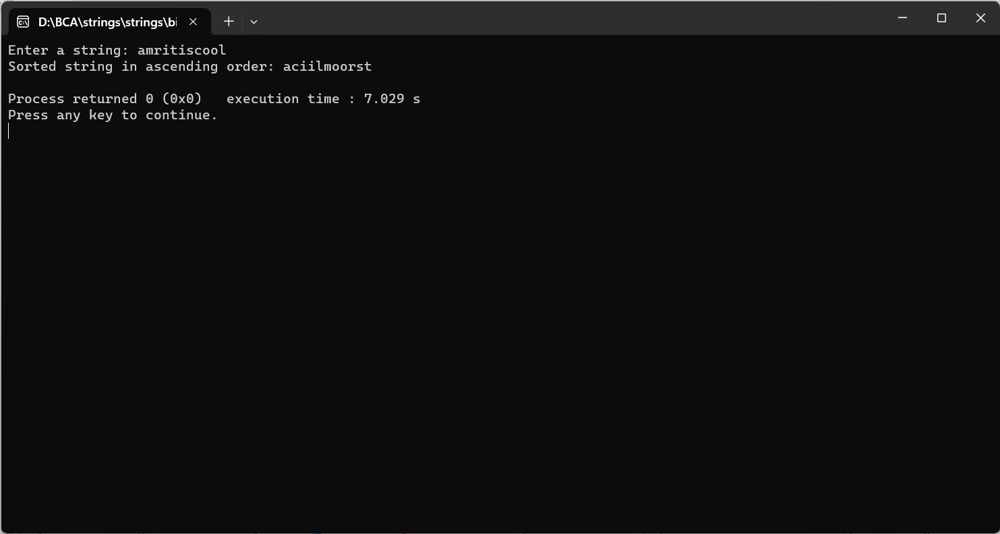

ENTER THE STRING FROM THE USER, SORT THE STRING IN ASCENDING ORDER AND PRINT IT
#include
#include
void sortString(char *str) {
int length = strlen(str);
int i, j;
char temp;
for (i = 0; i < length - 1; i++) {
for (j = i + 1; j < length; j++) {
if (str[i] > str[j]) {
temp = str[i];
str[i] = str[j];
str[j] = temp;
}
}
}
}
int main() {
char inputString[1000];
printf("Enter a string: ");
fgets(inputString, sizeof(inputString), stdin);
// Remove the newline character from the input
inputString[strcspn(inputString, "\n")] = '\0';
// Sort the string
sortString(inputString);
printf("Sorted string in ascending order: %s\n", inputString);
return 0;
}
